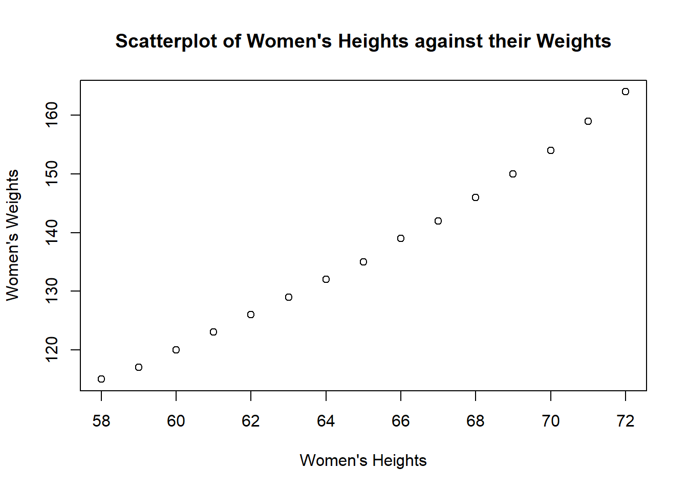
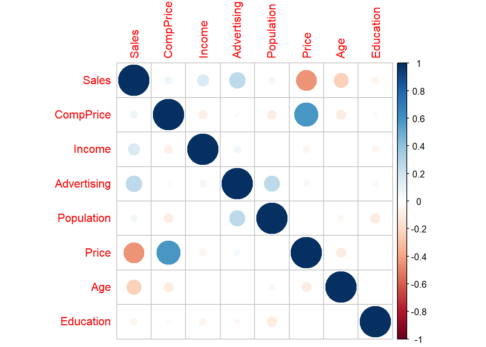
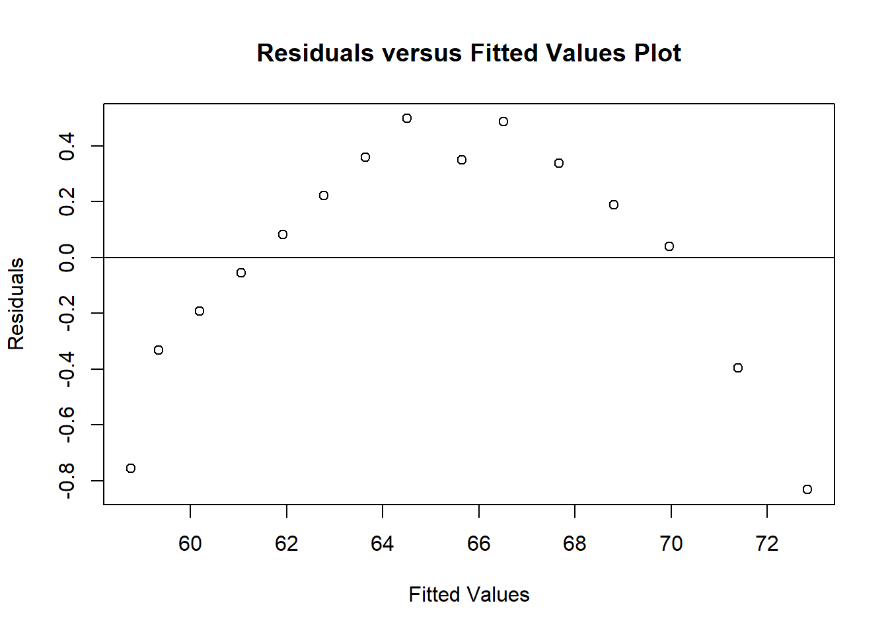
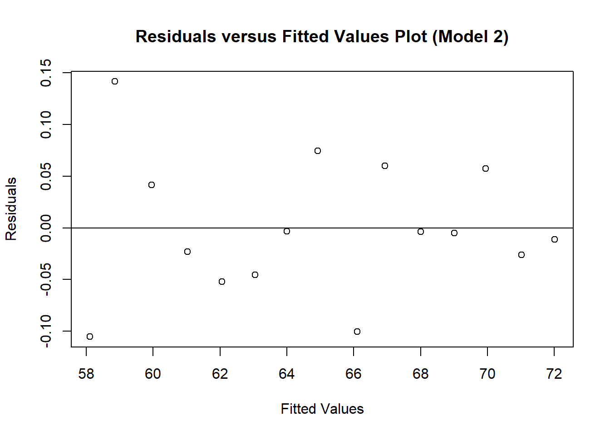
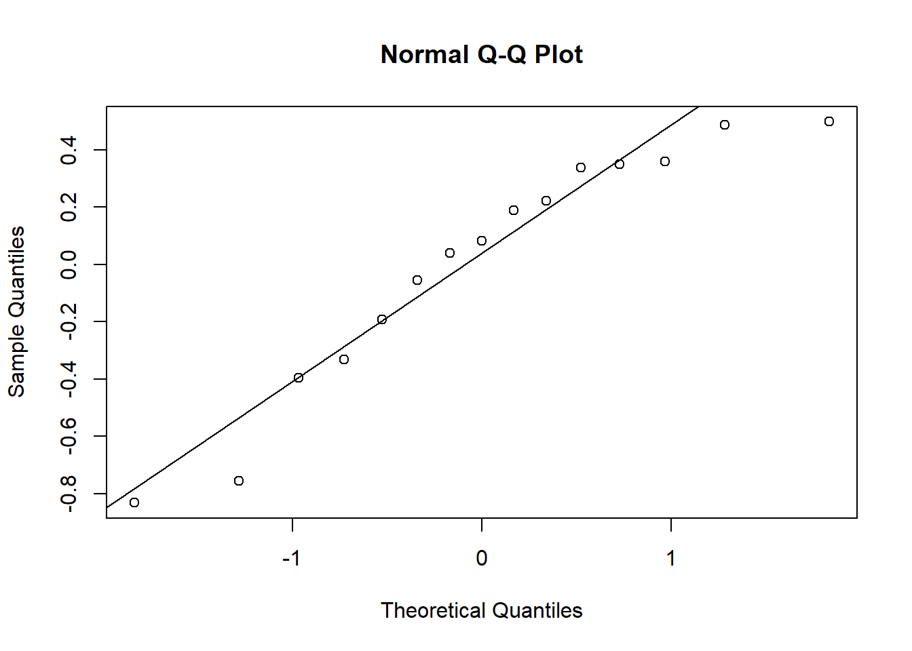
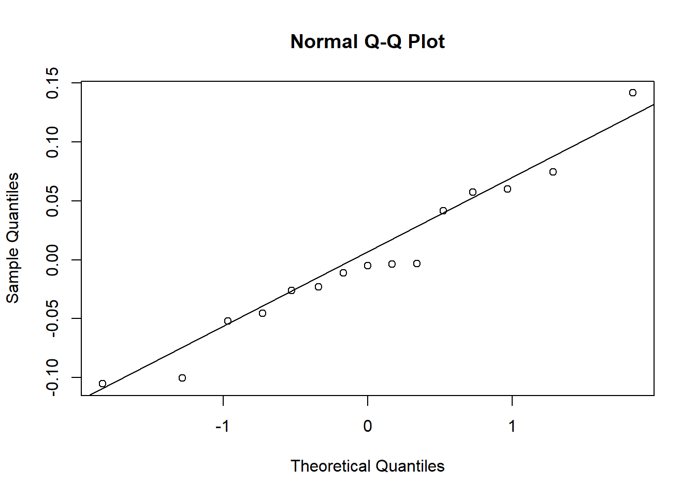

Chapter 2 How to Ruin a Regression Model
2.1 Forgot to Check Linear Regression Assumptions
Linearity. This means that the mean of the response variable is a linear combination of the parameters (regression coefficients) and the predictor variables. Note that this assumption puts restriction on the parameters only and the predictor variables are treated as fixed values (see above). The predictor variables themselves can be arbitrarily transformed.
How to check: One can verify this assumption visually by a scatterplot of the response variable against the predictor variable, or numerically by the correlation coefficient. However, in the event of multiple predictor variables, individual correlation coefficients or individual scatterplots are no longer feasible. The most common way to check linearity in this case is to scatter-plot residuals against the linearly predicted values. Curved or non-horizontally spead cloud on such a plot is diagnostic for non-linearity.
## height weight
## 1 58 115
## 2 59 117
## 3 60 120
## 4 61 123
## 5 62 126
## 6 63 129plot(women$height,women$weight,xlab="Women's Heights",ylab="Women's Weights", main="Scatterplot of Women's Heights against their Weights")
## [1] 0.9954948In the next example, we will examine data set Carseats from ISLR library. There are 2 ways to assess a function from a particular library in R. One can either conjure up the library in advance
## Warning: package 'ISLR' was built under R version 4.3.3## Sales CompPrice Income Advertising Population Price ShelveLoc Age Education
## 1 9.50 138 73 11 276 120 Bad 42 17
## 2 11.22 111 48 16 260 83 Good 65 10
## 3 10.06 113 35 10 269 80 Medium 59 12
## 4 7.40 117 100 4 466 97 Medium 55 14
## 5 4.15 141 64 3 340 128 Bad 38 13
## 6 10.81 124 113 13 501 72 Bad 78 16
## Urban US
## 1 Yes Yes
## 2 Yes Yes
## 3 Yes Yes
## 4 Yes Yes
## 5 Yes No
## 6 No Yesor one can also use double colons (::) to explicitly specify the library
## Sales CompPrice Income Advertising Population Price ShelveLoc Age Education
## 1 9.50 138 73 11 276 120 Bad 42 17
## 2 11.22 111 48 16 260 83 Good 65 10
## 3 10.06 113 35 10 269 80 Medium 59 12
## 4 7.40 117 100 4 466 97 Medium 55 14
## 5 4.15 141 64 3 340 128 Bad 38 13
## 6 10.81 124 113 13 501 72 Bad 78 16
## Urban US
## 1 Yes Yes
## 2 Yes Yes
## 3 Yes Yes
## 4 Yes Yes
## 5 Yes No
## 6 No YesTo investigate the correlation among quantitative variables in this data set, let use eliminate qualitative variables (ShelveLoc, Urban, US) from the original data set and rename the altered data set to be newdat. One can get rid of the columns corresponding to aforementioned qualitative variables by their indices.
Alternatively, the task can also be done by employing function subset and the column names as follows
Passing newdat into cor function, cor(newdat), one will receive a correlation matrix for all possible pairs of variables in newdat.
## Warning: package 'corrplot' was built under R version 4.3.3## corrplot 0.95 loaded## Sales CompPrice Income Advertising Population
## Sales 1.00000000 0.06407873 0.151950979 0.269506781 0.050470984
## CompPrice 0.06407873 1.00000000 -0.080653423 -0.024198788 -0.094706516
## Income 0.15195098 -0.08065342 1.000000000 0.058994706 -0.007876994
## Advertising 0.26950678 -0.02419879 0.058994706 1.000000000 0.265652145
## Population 0.05047098 -0.09470652 -0.007876994 0.265652145 1.000000000
## Price -0.44495073 0.58484777 -0.056698202 0.044536874 -0.012143620
## Age -0.23181544 -0.10023882 -0.004670094 -0.004557497 -0.042663355
## Education -0.05195524 0.02519705 -0.056855422 -0.033594307 -0.106378231
## Price Age Education
## Sales -0.44495073 -0.231815440 -0.051955242
## CompPrice 0.58484777 -0.100238817 0.025197050
## Income -0.05669820 -0.004670094 -0.056855422
## Advertising 0.04453687 -0.004557497 -0.033594307
## Population -0.01214362 -0.042663355 -0.106378231
## Price 1.00000000 -0.102176839 0.011746599
## Age -0.10217684 1.000000000 0.006488032
## Education 0.01174660 0.006488032 1.000000000
Constant variance (homoscedasticity). This means that the variance of the errors does not depend on the values of the predictor variables. Thus the variability of the responses for given fixed values of the predictors is the same regardless of how large or small the responses are. The presence of heteroscedasticity will result in an overall “average” estimate of variance being used instead of one that takes into account the true variance structure. This leads to less precise (but in the case of ordinary least squares, not biased) parameter estimates and biased standard errors, resulting in misleading tests and interval estimates. The mean squared error for the model will also be wrong.
How to check: Graphically, this assumption can be validated by a plot of residuals versus predicted values (or the values of each individual predictor) can be examined for a “tunnel effect” (i.e. increasing or decreasing vertical spread as one moves left to right on the plot). Formally, Breusch-Pagan test (or Koenker-Bassett test) can be used to assess this assumption. Bear in mind that the Breusch-Pagan test tends to be sensitive to departures from normality or small sample sizes.
##
## Call:
## lm(formula = women$height ~ women$weight, data = women)
##
## Residuals:
## Min 1Q Median 3Q Max
## -0.83233 -0.26249 0.08314 0.34353 0.49790
##
## Coefficients:
## Estimate Std. Error t value Pr(>|t|)
## (Intercept) 25.723456 1.043746 24.64 2.68e-12 ***
## women$weight 0.287249 0.007588 37.85 1.09e-14 ***
## ---
## Signif. codes: 0 '***' 0.001 '**' 0.01 '*' 0.05 '.' 0.1 ' ' 1
##
## Residual standard error: 0.44 on 13 degrees of freedom
## Multiple R-squared: 0.991, Adjusted R-squared: 0.9903
## F-statistic: 1433 on 1 and 13 DF, p-value: 1.091e-14plot(model1$fitted.values,resid(model1),xlab="Fitted Values",ylab="Residuals", main="Residuals versus Fitted Values Plot")
abline(0,0)
There is a conspicuous pattern in residuals for the model \(\hat{height} = a + b\times weight\). The curvilinear trajectory, as a matter of fact, suggests a quadratic relationship between womens’ heights and their weights. It is reasonable to add a second order term into the model.
data("women")
model2 = lm(formula = women$height~ women$weight + I(women$weight^2), data = women)
summary(model2)##
## Call:
## lm(formula = women$height ~ women$weight + I(women$weight^2),
## data = women)
##
## Residuals:
## Min 1Q Median 3Q Max
## -0.105338 -0.035764 -0.004898 0.049430 0.141593
##
## Coefficients:
## Estimate Std. Error t value Pr(>|t|)
## (Intercept) -1.175e+01 1.720e+00 -6.83 1.82e-05 ***
## women$weight 8.343e-01 2.502e-02 33.35 3.36e-13 ***
## I(women$weight^2) -1.973e-03 9.014e-05 -21.89 4.84e-11 ***
## ---
## Signif. codes: 0 '***' 0.001 '**' 0.01 '*' 0.05 '.' 0.1 ' ' 1
##
## Residual standard error: 0.07158 on 12 degrees of freedom
## Multiple R-squared: 0.9998, Adjusted R-squared: 0.9997
## F-statistic: 2.732e+04 on 2 and 12 DF, p-value: < 2.2e-16plot(model2$fitted.values,resid(model2),xlab="Fitted Values",ylab="Residuals", main="Residuals versus Fitted Values Plot (Model 2)")
abline(0,0)
Independence of errors. This assumes that the errors of the response variables are uncorrelated with each other.
How to check: To test for violations of independence, you can look at plots of the residuals versus predictor variables or plots of residuals versus row number in situations where the rows have been sorted or grouped in some way that depends (only) on the values of the predictor variables. The residuals should be randomly and symmetrically distributed around zero.
Normally distributed errors implies that the errors follow a Normal distribution.
Technically, the normal distribution assumption is not necessary if you are willing to assume the model equation is correct and your only goal is to estimate its coefficients and generate predictions in such a way as to minimize mean squared error. The formulas for estimating coefficients require no more than that, and some references on regression analysis do not list normally distributed errors among the key assumptions. But generally we are interested in making inferences about the model and/or estimating the probability that a given forecast error will exceed some threshold in a particular direction, in which case distributional assumptions are important. Also, a significant violation of the normal distribution assumption is often a “red flag” indicating that there is some other problem with the model assumptions and/or that there are a few unusual data points that should be studied closely and/or that a better model is still waiting out there somewhere.
##
## Call:
## lm(formula = women$height ~ women$weight, data = women)
##
## Residuals:
## Min 1Q Median 3Q Max
## -0.83233 -0.26249 0.08314 0.34353 0.49790
##
## Coefficients:
## Estimate Std. Error t value Pr(>|t|)
## (Intercept) 25.723456 1.043746 24.64 2.68e-12 ***
## women$weight 0.287249 0.007588 37.85 1.09e-14 ***
## ---
## Signif. codes: 0 '***' 0.001 '**' 0.01 '*' 0.05 '.' 0.1 ' ' 1
##
## Residual standard error: 0.44 on 13 degrees of freedom
## Multiple R-squared: 0.991, Adjusted R-squared: 0.9903
## F-statistic: 1433 on 1 and 13 DF, p-value: 1.091e-14
data("women")
model = lm(formula = women$height~ women$weight + I(women$weight^2), data = women)
summary(model)##
## Call:
## lm(formula = women$height ~ women$weight + I(women$weight^2),
## data = women)
##
## Residuals:
## Min 1Q Median 3Q Max
## -0.105338 -0.035764 -0.004898 0.049430 0.141593
##
## Coefficients:
## Estimate Std. Error t value Pr(>|t|)
## (Intercept) -1.175e+01 1.720e+00 -6.83 1.82e-05 ***
## women$weight 8.343e-01 2.502e-02 33.35 3.36e-13 ***
## I(women$weight^2) -1.973e-03 9.014e-05 -21.89 4.84e-11 ***
## ---
## Signif. codes: 0 '***' 0.001 '**' 0.01 '*' 0.05 '.' 0.1 ' ' 1
##
## Residual standard error: 0.07158 on 12 degrees of freedom
## Multiple R-squared: 0.9998, Adjusted R-squared: 0.9997
## F-statistic: 2.732e+04 on 2 and 12 DF, p-value: < 2.2e-16
- Lack of perfect multicollinearity in the predictors. Perfect multicollinearity refers to a situation where the predictive variables have an exact linear relationship. This can be caused by accidentally duplicating a variable in the data, using a linear transformation of a variable along with the original (e.g., the same temperature measurements expressed in Fahrenheit and Celsius), or including a linear combination of multiple variables in the model, such as their mean.